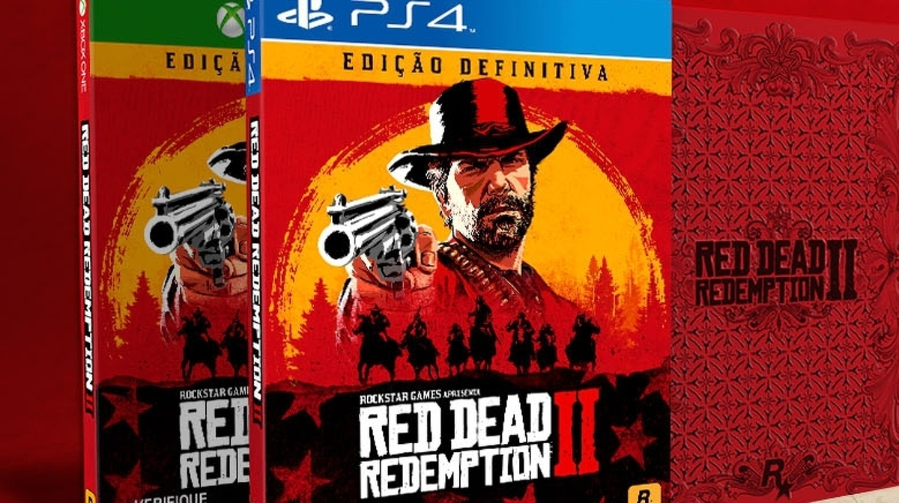

|  |
| O Red Dead Redemption pode ser adquirido para: PC, Xbox One, Xbox One S, Xbox One X, Xbox Series X/S, Playstation 4, Playstation 5, entre outros consoles. Pode-se achar para comprar em diversos sites como a americanas.com.br; submarino.com.br; amazon.com.br; kabum.com.br; casasbahia.com.br; extra.com.br; pontofrio.com.br; carrefour.com.br... Já para PC o Red Dead Redemption 2 já está disponível para compra na loja da Epic Games, Green Man Gaming, GameStop, Humble Store e outras lojas digitais. |